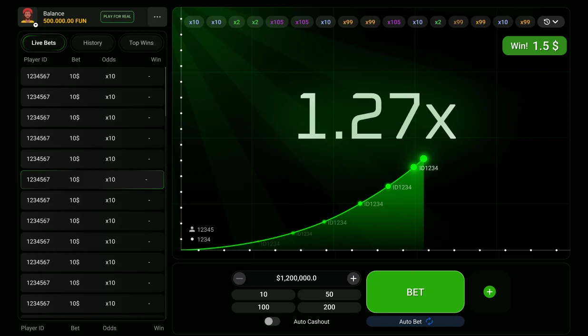
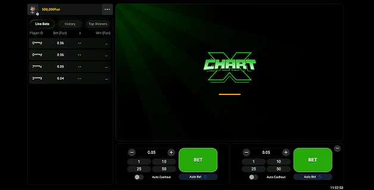

← Crash / Instant08 / 11
Pascal Gaming · Crash
ChartX

Visual world
A graphic approach
Luminous green curves, crisp typography, and a dark grid create a focused chart-inspired visual language.
A team-delivered Pascal Gaming project, presented as part of my game art and production portfolio.
